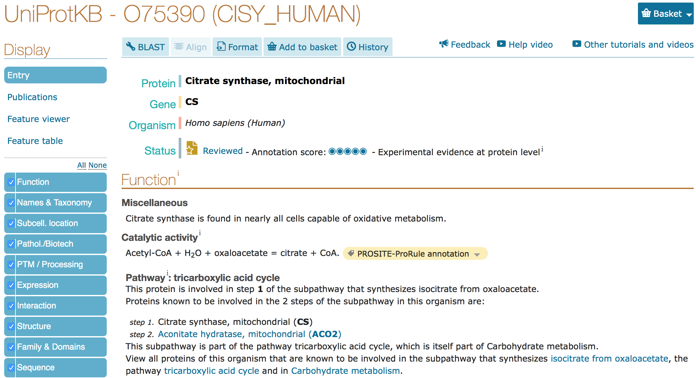
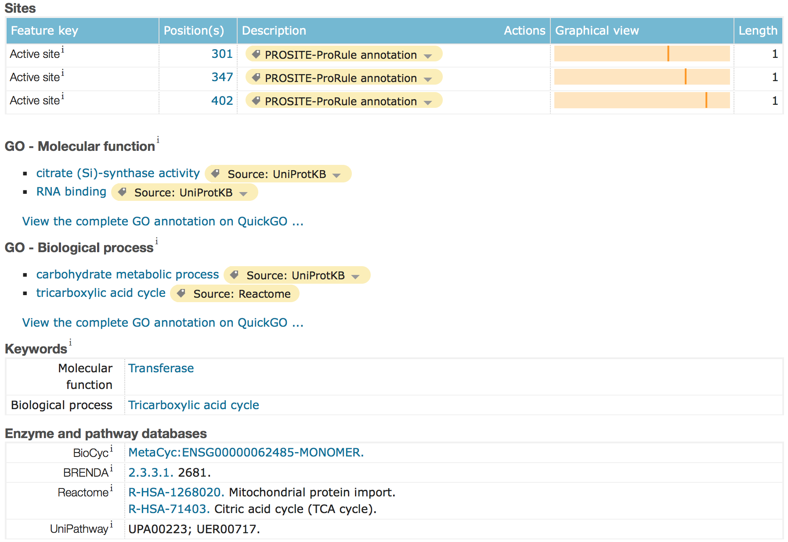
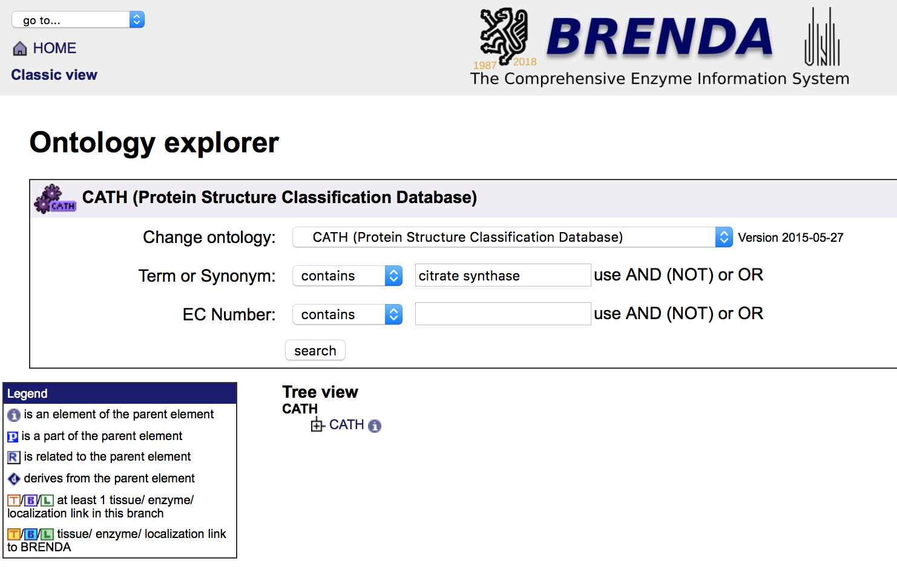
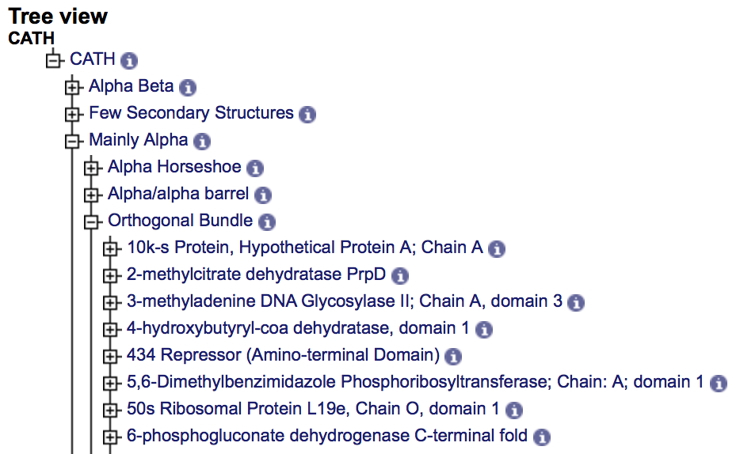
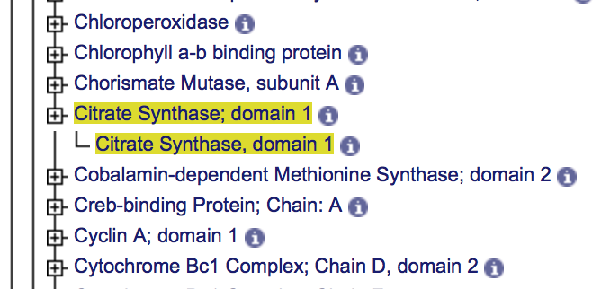
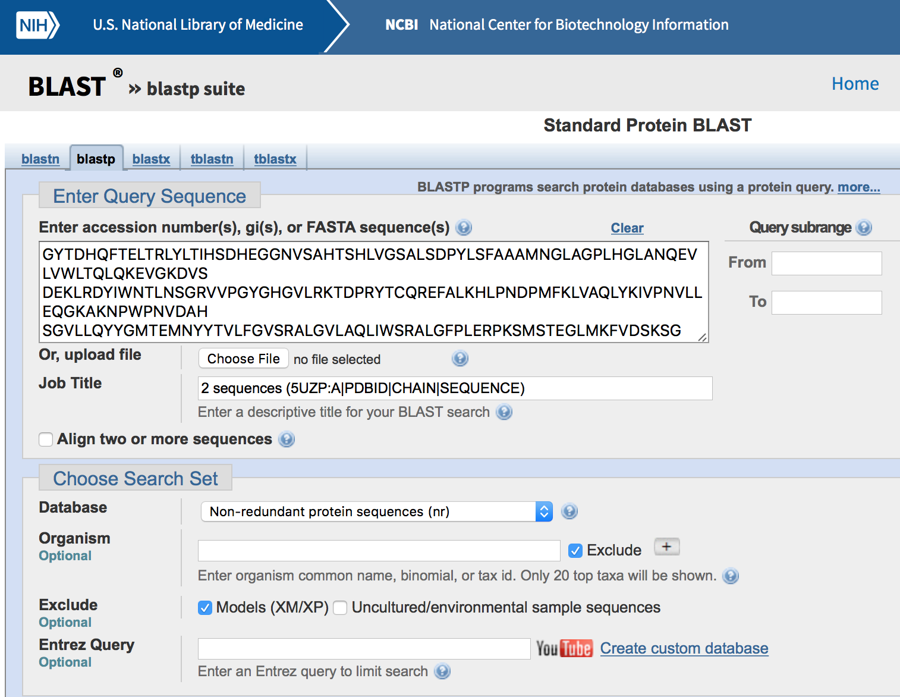
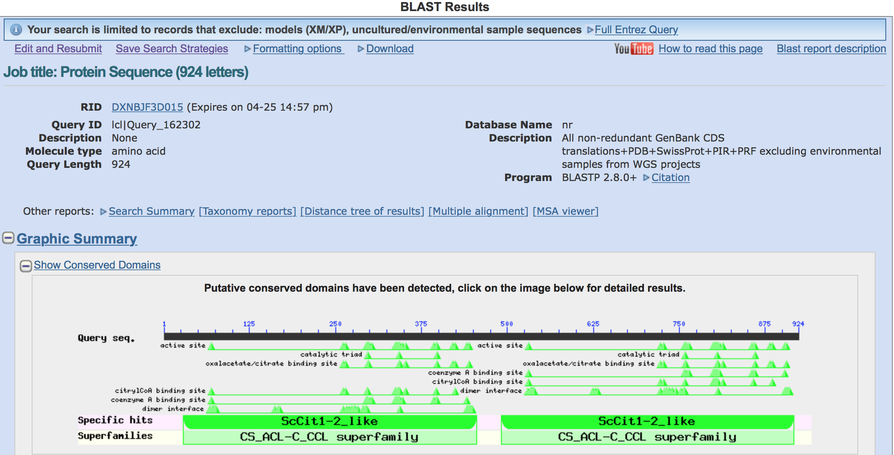
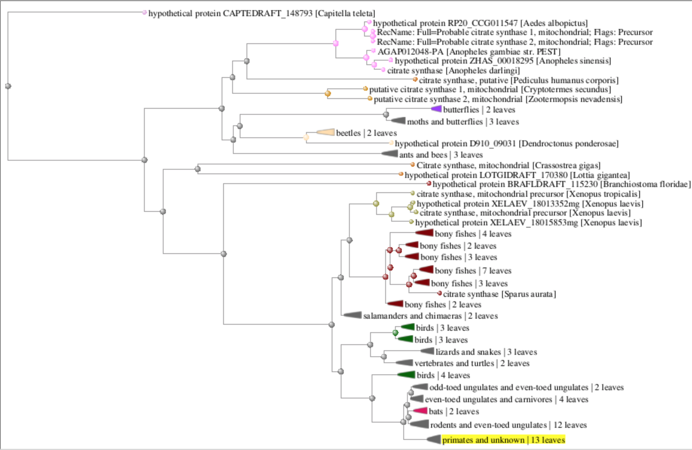

NOTE: Step Nine was performed using Citrate Synthase - 5UZP information
Search UniProt based on the link from the macromolecule section in PDB.
The name or sequence the protein may be used to query UniProt.


UniProt Home Page
Search BRENDA - CATH :use the name of the protein.
The CATH database provides hierarchical classification of protein
domains based on their folding patterns. Domains are obtained from
protein structures deposited in the Protein Data Bank and both domain
identification and subsequent classification use manual as well as automated procedures.
CATH specifically categorizes proteins by Classification, Architecture, Topology, Homology
BRENDA - CATH Analysis Search
BRENDA SEARCH

BRENDA Classification - Architecture RESULTS

BRENDA Topology - Homology Results

BLAST
BLAST is a Basic Local Alignment Search Tool algorithm used for comparing primary
biological sequence information. This includes amino-acid sequences of proteins or the
nucleotides of DNA sequences. A BLAST search enables a researcher to compare a query
sequence with a library or database of sequences, and identify library sequences that
resemble the query sequence above a certain threshold.
BLAST SEARCH with FASTA sequence

BLAST RESULTS

BLAST [Distance of Tree Results]
